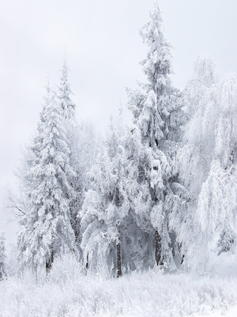

Central Balkan National Park
|
The Central Balkan National Park (Bulgarian: Национален парк Централен Балкан) is a national park in the heart of Bulgaria, nestled in the central and higher portions of the Balkan Mountains. Its altitude varies from 550 metres (1,800 ft) near the town of Karlovo to 2,376 metres (7,795 ft) at Botev Peak, the highest summit in the range. It was established on 31 October 1991. |
 |
History
EstablishmentThe Central Balkan National Park was established in 1991 to conserve the unique natural scenery and heritage of this area and protect the customs and livelihood of the local population. The Park Directorate, a regional body of the Ministry of the Environment and Waters, manages the Park. The Directorate engages local organizations, volunteers, and mountain enthusiasts in pursuing its goals. |
 |
 |
Park statistics
Area: 71,669.5 hectares Total length: 85 km Average width: 10 km Highest peak: Botev Peak at 2,376 meters above sea level Lowest elevation: near Karlovo, about 500 meters above sea level Wooded area: 44,000.8 hectares Treeless area: 27,668.7 hectares 70% of all ecosystems are natural There are 9 nature reserves, with a combined area of 20,019 hectares